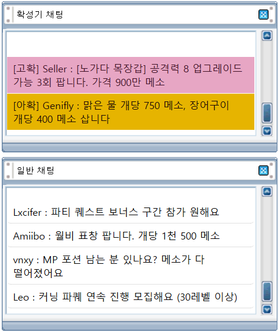
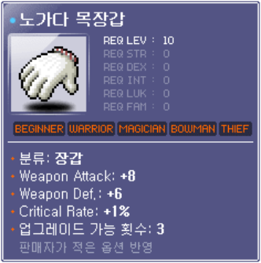
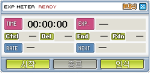
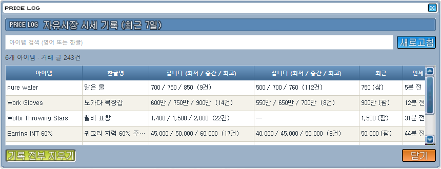
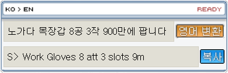
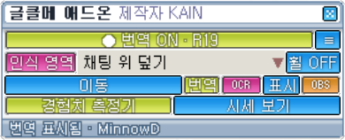

게임 채팅창의 영어를 읽어 한국어로 바로 번역하고, 한국어로 쓴 글은 영어 거래 글로 바꿔 줍니다.
번역은 PC 안에서만 동작하는 오프라인 AI — 인터넷 번역 사이트·API 키·회원가입이 필요 없습니다.
게임 채팅창 글자를 화면 인식(OCR)으로 읽어 한국어로 번역합니다. 게임 파일·메모리·패킷은 건드리지 않습니다.
확성기는 게임 색 그대로 위 칸에, 일반 채팅은 아래 칸에 나눠 보여 줍니다. 창 모양도 게임 UI 그대로.
S> Glove ATT 60% 120k → 장갑 공격력 60% 주문서 12만 메소에 팝니다
J> KPQ rush → 커닝 파퀘 연속 진행 참가 원해요 · 게임 약어·은어 수백 개
번역된 [아이템]에 마우스를 올리면 게임과 똑같은 툴팁이 뜹니다. 판매자가 적은 옵션(공격력·업횟)은 반영, 없으면 노작 기준.
한국어로 노가다 목장갑 8공 3작 900만에 팝니다를 쓰면 S> Work Gloves 8 att 3 slots 9m, 커닝 파퀘 3명 모집해요 → R> KPQ need 3으로 바꿔 자동 복사.
확성기·채팅의 S>/B> 거래 글 가격을 자동으로 모아 아이템별 최근 7일 최저·중간·최고가를 보여 줍니다.
사냥 시간, 획득 EXP, 시간당 경험치, 다음 레벨까지 남은 시간, 단축키 물약 사용량을 자동으로 셉니다.
원하는 단어가 나오면 키워드 알림, 번역 내역 저장·검색, OBS 브라우저 소스로 방송 화면에 번역 표시.





메이플스토리 클래식 월드를 켜고 글클메 애드온을 실행합니다. 컨트롤 패널이 게임 창 아래쪽에 붙습니다.
● 번역 OFF를 눌러 ● 번역 ON으로 바꾸면 채팅 위치를 자동으로 찾아 번역을 시작합니다.
번역이 이상하면 인식 영역을 누르고 게임 채팅창을 마우스로 드래그해 지정합니다.
번역창 위치는 채팅 위 덮기 · 오른쪽 자석 · 왼쪽 자석 · 자유 플로팅 중에서 고릅니다.
지난 채팅을 보려면 휠 OFF → 휠 ON으로 바꾸고 마우스 휠이나 드래그로 올립니다.
≡ 설정에서 글꼴·글자 크기·색·투명도, 키워드 알림, 시세 기록을 바꿀 수 있습니다.
한국어 입력칸에 쓰고 Enter → 영어로 바뀌고 복사됩니다. 게임 채팅에 Ctrl+V로 붙여 넣으세요.
[아이템] 이름에 마우스를 올리면 툴팁, 시세 보기로 가격 기록, 경험치 측정기로 사냥 기록.
